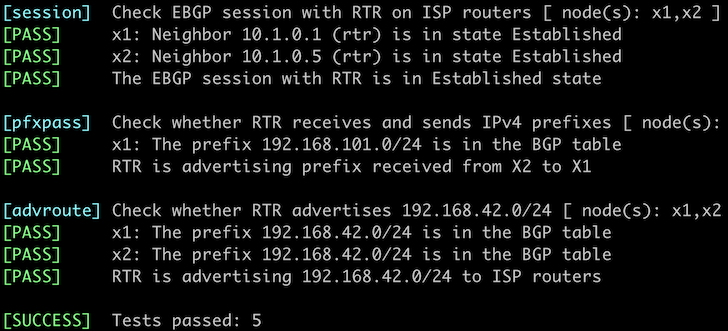

Advertise IPv4 Prefixes to BGP Neighbors
In the previous lab exercise, you configured EBGP sessions with two routers belonging to upstream ISPs. Now it’s time to advertise your address space (IPv4 prefixes) to them so you’ll start receiving some traffic.

The routers in your lab use the following BGP AS numbers. Each upstream router advertises an IPv4 prefix and the default route.
| Node/ASN | Router ID | Advertised prefixes |
|---|---|---|
| AS65000 | ||
| rtr | 10.0.0.1 | |
| AS65100 | ||
| x1 | 10.0.0.10 | 192.168.100.0/24 |
| AS65101 | ||
| x2 | 10.0.0.11 | 192.168.101.0/24 |
Your router has these EBGP neighbors. netlab configures them automatically; if you’re using some other lab infrastructure, you’ll have to configure them manually.
| Node | Neighbor | Neighbor IPv4 | Neighbor AS |
|---|---|---|---|
| rtr | x1 | 10.1.0.2 | 65100 |
| rtr | x2 | 10.1.0.6 | 65101 |
Start the Lab
Assuming you already set up your lab infrastructure:
- Change directory to
basic/3-originate - Execute netlab up (device requirements, other options)
- Log into your device (RTR) with netlab connect rtr and verify IP addresses and basic BGP configuration.
Note: netlab will configure IP addressing and EBGP sessions on your router. If you’re not using netlab, continue with the configuration you made during the previous exercise.
Configuration Tasks
You have to advertise 192.168.42.0/24 – the IP address space belonging to your organization – to the upstream providers.
BGP never originates IP prefixes without being told to do so. The usual ways to do that are:
- Redistribution of other routing information sources into BGP – for example, redistributing directly connected subnets or OSPF routes. You’ll practice that in the Redistribute IGP Information Into BGP lab exercise.
- Origination of configured prefixes, often using network router configuration command. This approach assumes there’s an exact match in the IP routing table
While the first method is usually used within enterprise networks that use BGP as an internal routing protocol or to connect to an MPLS/VPN service, you should have tight control over the prefixes advertised to the public Internet. Please use the second method in this lab exercise.
Warning
If your device happens to be fully compliant with RFC 8212 (example: Cisco IOS XR), you’ll have to configure a permit everything outgoing filter on all EBGP neighbors or your device won’t send them anything.
Verification
You can use the netlab validate command if you’ve installed netlab release 1.7.0 or later and use Cumulus Linux, FRR, or Arista EOS on the external routers.

If that command fails or you’re using another network operating system on the external routers, it’s time to start a troubleshooting session.
The IPv4 prefixes you want to advertise to EBGP neighbors must be in your router’s BGP table first. A command similar to show ip bgp is thus a good starting point. This is how Arista EOS displays the BGP table:
rtr#show ip bgp
BGP routing table information for VRF default
Router identifier 10.0.0.1, local AS number 65000
Route status codes: s - suppressed contributor, * - valid, > - active, E - ECMP head, e - ECMP
S - Stale, c - Contributing to ECMP, b - backup, L - labeled-unicast
% - Pending BGP convergence
Origin codes: i - IGP, e - EGP, ? - incomplete
RPKI Origin Validation codes: V - valid, I - invalid, U - unknown
AS Path Attributes: Or-ID - Originator ID, C-LST - Cluster List, LL Nexthop - Link Local Nexthop
Network Next Hop Metric AIGP LocPref Weight Path
* > 0.0.0.0/0 10.1.0.2 0 - 100 0 65100 i
* 0.0.0.0/0 10.1.0.6 0 - 100 0 65101 i
* > 192.168.42.0/24 - - - - 0 ?
* > 192.168.100.0/24 10.1.0.2 0 - 100 0 65100 i
* > 192.168.101.0/24 10.1.0.6 0 - 100 0 65101 i
However, you must know if your router advertises its prefixes to its EBGP neighbors. Some network devices have a show command that displays prefixes advertised to a neighbor. Here’s how that command works on Arista EOS:
rtr#show ip bgp neighbor 10.1.0.2 advertised-routes
BGP routing table information for VRF default
Router identifier 10.0.0.1, local AS number 65000
Route status codes: s - suppressed contributor, * - valid, > - active, E - ECMP head, e - ECMP
S - Stale, c - Contributing to ECMP, b - backup, L - labeled-unicast, q - Queued for advertisement
% - Pending BGP convergence
Origin codes: i - IGP, e - EGP, ? - incomplete
RPKI Origin Validation codes: V - valid, I - invalid, U - unknown
AS Path Attributes: Or-ID - Originator ID, C-LST - Cluster List, LL Nexthop - Link Local Nexthop
Network Next Hop Metric AIGP LocPref Weight Path
* > 192.168.42.0/24 10.1.0.1 - - - - 65000 ?
* > 192.168.101.0/24 10.1.0.1 - - - - 65000 65101 i
Check the BGP table on the remote router to ensure everything is okay. While that’s a bit hard to do in real life (unless your ISP offers a looking glass), it’s way more manageable in a lab – connect to X1 or X2 with netlab connect (or SSH into them if you’re not using netlab), start vtysh if you’re running FRR or Cumulus Linux on them, and execute the show ip bgp command:
$ netlab connect x1
Connecting to container clab-originate-x1, starting bash
Use vtysh to connect to FRR daemon
x1(bash)#sudo vtysh
Hello, this is FRRouting (version 9.0.1_git).
Copyright 1996-2005 Kunihiro Ishiguro, et al.
x1# show ip bgp
BGP table version is 5, local router ID is 192.168.100.1, vrf id 0
Default local pref 100, local AS 65100
Status codes: s suppressed, d damped, h history, * valid, > best, = multipath,
i internal, r RIB-failure, S Stale, R Removed
Nexthop codes: @NNN nexthop's vrf id, < announce-nh-self
Origin codes: i - IGP, e - EGP, ? - incomplete
RPKI validation codes: V valid, I invalid, N Not found
Network Next Hop Metric LocPrf Weight Path
*> 192.168.42.0/24 10.1.0.1 0 65000 ?
*> 192.168.100.0/24 0.0.0.0(x1) 0 32768 i
*> 192.168.101.0/24 10.1.0.1 0 65000 65101 i
Displayed 3 routes and 3 total paths
Next:
- If you’re interested in BGP routing policies, proceed to Use BGP Weights to prefer one of the upstream ISPs.
- If you want to build networks with more than one BGP router, continue with Running BGP in Larger Networks
You could also do these optional exercises:
- Configure BGP for IPv6
- Redistribute IGP Information Into BGP
- Protect EBGP sessions
- Use BFD to Speed Up BGP Convergence
- BGP route aggregation
Reference Information
This lab uses a subset of the 4-router lab topology. The following information might help you if you plan to build custom lab infrastructure:
Device Requirements
- Customer router: use any device supported by the netlab BGP configuration module.
- External routers need support for default route origination. If you want to use an unsupported device as an external router, remove the bgp.originate attribute from the lab topology.
- You can do automated lab validation with Arista EOS, Cisco IOSv, Cumulus Linux, or FRR running on the external router. Automated lab validation requires netlab release 1.7.0 or higher.
- Git repository contains external router initial device configurations for Cumulus Linux.
Lab Wiring
| Origin Device | Origin Port | Destination Device | Destination Port |
|---|---|---|---|
| rtr | Ethernet1 | x1 | swp1 |
| rtr | Ethernet2 | x2 | swp1 |
Lab Addressing
| Node/Interface | IPv4 Address | IPv6 Address | Description |
|---|---|---|---|
| rtr | 10.0.0.1/32 | Loopback | |
| Ethernet1 | 10.1.0.1/30 | rtr -> x1 | |
| Ethernet2 | 10.1.0.5/30 | rtr -> x2 | |
| x1 | 192.168.100.1/24 | Loopback | |
| eth1 | 10.1.0.2/30 | x1 -> rtr | |
| x2 | 192.168.101.1/24 | Loopback | |
| eth1 | 10.1.0.6/30 | x2 -> rtr |